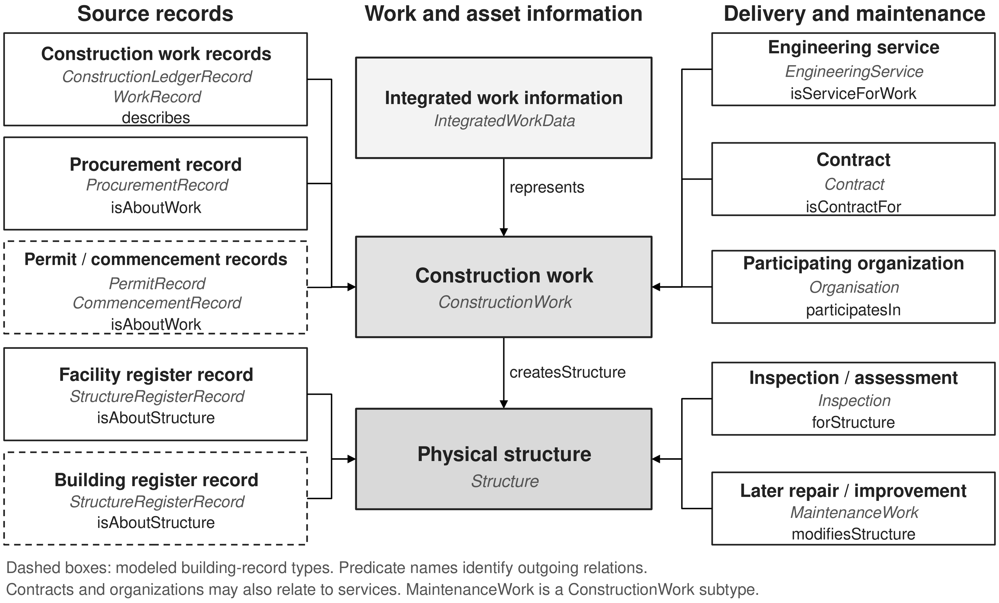
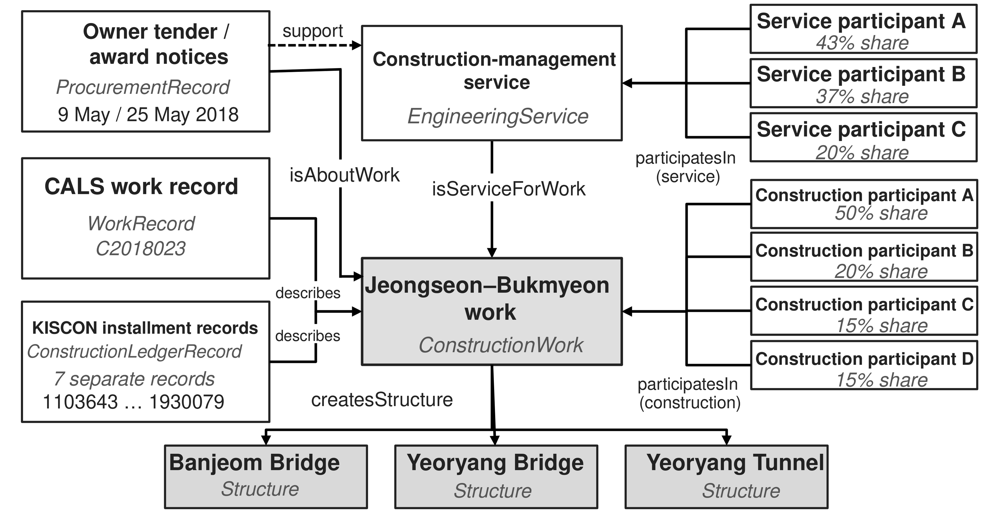

Ontology supplement
Related article: Integrating Construction Delivery and Asset Management Information: An Ontology-Based Model
This ontology explains how construction works and their relationships with physical structures connect construction-delivery information with inspections, condition assessments, and later maintenance. It distinguishes the actual work, its integrated information representation, and the source records that describe it.
IntegratedWorkData —represents→ ConstructionWork
IntegratedWorkData —hasMapping→ RecordMapping —sourceRecord→ SourceRecord
The integrated information represents the actual work. Mappings associate contributing source records while retaining the evidence and scope of each association.
Model and application

Sources for Figure 1
Sources for all figure concepts are listed in the coverage table. Work, service, and structure information comes from the corresponding source records. RecordMapping is described in the term catalog and is omitted from the image.
KISCON · CALS_WORK · CALS_REGISTER · FMS · NOTICES · SEUMTER · CEMS · QUALITY · STUDY

Sources for Figure 2
Construction participation is documented in the KISCON ledger extracts. The tender notice dated 9 May 2018 (Wonju Regional Construction Management Administration Notice 2018-038) and the award notice dated 25 May 2018 document the management service; the award notice records its participants and shares. The notices name the National Route 42 Jeongseon–Bukmyeon improvement work also recorded in the ledgers. CALS work record C2018023 provides the work-to-facility information described in the manuscript. Cross-system links are based on a comparison of the collected records, separate from the common-work check within the ledger set. For R3, the retained comparisons associate records by work title, route, section, and owner but do not establish uniqueness within a documented CALS candidate set. The combined R3 view is conditional on this cross-system correspondence.
Classes
ConstructionWorkIntegratedWorkDataRecordMappingSourceRecordEngineeringServiceContractOrganisationStructureInspectionMaintenanceWorkBuildingCivilStructureConstructionLedgerRecordWorkRecordPermitRecordCommencementRecordProcurementRecordStructureRegisterRecordInspectionRecordThe links under “In domain of” and “In range of” locate relationships that use a class. “Via” identifies a declared superclass; it does not introduce an additional relationship.
ConstructionWorkClass
An actual construction activity, distinct from any record describing it. MaintenanceWork specializes this class for later repair or improvement works.
Apply within the record, activity-related, spatial, and temporal scope specified in Sources.
IRI
https://raw.githubusercontent.com/YoonsleeProjects/ConstructionOntology/main/infrastructure-continuity-spec.ttl#ConstructionWork| Subclasses | MaintenanceWork |
|---|---|
| In domain of | createsStructure |
| In range of | represents · describes · isAboutWork · isServiceForWork · isContractFor · participatesIn |
| Sources | KISCON · CALS_WORK · CALS_REGISTER |
IntegratedWorkDataClass
An integrated information representation that organizes linked source records about a construction work and its related activities and structures.
Constructed in this study from contributing records; not a single pre-existing record in a national system.
IRI
https://raw.githubusercontent.com/YoonsleeProjects/ConstructionOntology/main/infrastructure-continuity-spec.ttl#IntegratedWorkData| In domain of | represents · hasMapping |
|---|---|
| Sources | STUDY · KISCON · CALS_WORK · NOTICES · CALS_REGISTER · FMS · QUALITY |
RecordMappingClass
A construct defined in this study that associates a contributing source record with the integrated information representation of a construction work while retaining the evidence and scope of that association.
Constructed in this study from contributing records; not a single pre-existing record in a national system. In the study application, each mapping associates one IntegratedWorkData representation with one SourceRecord. This usage is not an OWL cardinality restriction.
IRI
https://raw.githubusercontent.com/YoonsleeProjects/ConstructionOntology/main/infrastructure-continuity-spec.ttl#RecordMapping| In domain of | sourceRecord |
|---|---|
| In range of | hasMapping |
| Sources | STUDY · KISCON · CALS_WORK · NOTICES · CALS_REGISTER · FMS · QUALITY |
SourceRecordClass
A record maintained in a source information system or issued by an agency, distinct from the work, service, or asset to which it refers.
Apply within the record, activity-related, spatial, and temporal scope specified in Sources.
IRI
https://raw.githubusercontent.com/YoonsleeProjects/ConstructionOntology/main/infrastructure-continuity-spec.ttl#SourceRecord| Subclasses | ConstructionLedgerRecord · WorkRecord · PermitRecord · CommencementRecord · ProcurementRecord · StructureRegisterRecord · InspectionRecord |
|---|---|
| In range of | sourceRecord |
| Sources | KISCON · CALS_WORK · CALS_REGISTER · FMS · NOTICES · SEUMTER · QUALITY |
EngineeringServiceClass
A design, supervision, management, or assessment service commissioned in relation to a construction work.
Apply within the record, activity-related, spatial, and temporal scope specified in Sources.
IRI
https://raw.githubusercontent.com/YoonsleeProjects/ConstructionOntology/main/infrastructure-continuity-spec.ttl#EngineeringService| In domain of | isServiceForWork |
|---|---|
| In range of | isContractFor · participatesIn |
| Sources | NOTICES · CEMS · CALS_WORK |
ContractClass
A contractual obligation concerning a construction work or an engineering service.
Apply within the record, activity-related, spatial, and temporal scope specified in Sources.
IRI
https://raw.githubusercontent.com/YoonsleeProjects/ConstructionOntology/main/infrastructure-continuity-spec.ttl#Contract| In domain of | isContractFor |
|---|---|
| Sources | KISCON · CALS_WORK · NOTICES |
OrganisationClass
A party that commissions, performs, or participates in a construction work or engineering service.
Apply within the record, activity-related, spatial, and temporal scope specified in Sources.
IRI
https://raw.githubusercontent.com/YoonsleeProjects/ConstructionOntology/main/infrastructure-continuity-spec.ttl#Organisation| In domain of | participatesIn |
|---|---|
| Sources | KISCON · NOTICES · CALS_WORK |
StructureClass
A physical structure created or modified by a construction work. Building and CivilStructure are its specializations.
Apply within the record, activity-related, spatial, and temporal scope specified in Sources.
IRI
https://raw.githubusercontent.com/YoonsleeProjects/ConstructionOntology/main/infrastructure-continuity-spec.ttl#Structure| Subclasses | Building · CivilStructure |
|---|---|
| In range of | isAboutStructure · createsStructure · modifiesStructure · forStructure |
| Sources | CALS_WORK · CALS_REGISTER · FMS · SEUMTER |
InspectionClass
An inspection or assessment activity actually performed on a structure, distinct from a plan or the record documenting that activity.
Apply within the record, activity-related, spatial, and temporal scope specified in Sources.
IRI
https://raw.githubusercontent.com/YoonsleeProjects/ConstructionOntology/main/infrastructure-continuity-spec.ttl#Inspection| In domain of | forStructure |
|---|---|
| Sources | CALS_REGISTER · FMS |
MaintenanceWorkClass
A specialization of ConstructionWork for later repair or improvement works.
Apply within the record, activity-related, spatial, and temporal scope specified in Sources.
IRI
https://raw.githubusercontent.com/YoonsleeProjects/ConstructionOntology/main/infrastructure-continuity-spec.ttl#MaintenanceWork| Subclass of | ConstructionWork |
|---|---|
| In domain of | modifiesStructure · createsStructure (via ConstructionWork) |
| In range of | represents (via ConstructionWork) · describes (via ConstructionWork) · isAboutWork (via ConstructionWork) · isServiceForWork (via ConstructionWork) · isContractFor (via ConstructionWork) · participatesIn (via ConstructionWork) |
| Sources | QUALITY |
BuildingClass
A physical building, modeled as a specialization of Structure. Building applications described in the article remain unpopulated.
Modeled building context B01; no observed application records.
IRI
https://raw.githubusercontent.com/YoonsleeProjects/ConstructionOntology/main/infrastructure-continuity-spec.ttl#Building| Subclass of | Structure |
|---|---|
| In range of | isAboutStructure (via Structure) · createsStructure (via Structure) · modifiesStructure (via Structure) · forStructure (via Structure) |
| Sources | SEUMTER |
CivilStructureClass
A civil structure, modeled as a specialization of Structure.
Apply within the record, activity-related, spatial, and temporal scope specified in Sources.
IRI
https://raw.githubusercontent.com/YoonsleeProjects/ConstructionOntology/main/infrastructure-continuity-spec.ttl#CivilStructure| Subclass of | Structure |
|---|---|
| In range of | isAboutStructure (via Structure) · createsStructure (via Structure) · modifiesStructure (via Structure) · forStructure (via Structure) |
| Sources | CALS_WORK · CALS_REGISTER |
ConstructionLedgerRecordClass
A construction work ledger entry containing details of a work, including contractual particulars and participation information.
Seven observed R3 ledger extracts; no actual ledger evidence is assigned to R1, R2, or R4.
IRI
https://raw.githubusercontent.com/YoonsleeProjects/ConstructionOntology/main/infrastructure-continuity-spec.ttl#ConstructionLedgerRecord| Subclass of | SourceRecord |
|---|---|
| In domain of | describes |
| In range of | sourceRecord (via SourceRecord) |
| Sources | KISCON |
WorkRecordClass
A source-system record describing a construction work and its recorded characteristics.
Apply within the record, activity-related, spatial, and temporal scope specified in Sources.
IRI
https://raw.githubusercontent.com/YoonsleeProjects/ConstructionOntology/main/infrastructure-continuity-spec.ttl#WorkRecord| Subclass of | SourceRecord |
|---|---|
| In domain of | describes |
| In range of | sourceRecord (via SourceRecord) |
| Sources | CALS_WORK |
PermitRecordClass
An administrative record documenting a permit for the work identified in the record.
Modeled building context B01; no observed application records.
IRI
https://raw.githubusercontent.com/YoonsleeProjects/ConstructionOntology/main/infrastructure-continuity-spec.ttl#PermitRecord| Subclass of | SourceRecord |
|---|---|
| In domain of | isAboutWork |
| In range of | sourceRecord (via SourceRecord) |
| Sources | SEUMTER |
CommencementRecordClass
An administrative record reporting the commencement of the work identified in the record.
Modeled building context B01; no observed application records.
IRI
https://raw.githubusercontent.com/YoonsleeProjects/ConstructionOntology/main/infrastructure-continuity-spec.ttl#CommencementRecord| Subclass of | SourceRecord |
|---|---|
| In domain of | isAboutWork |
| In range of | sourceRecord (via SourceRecord) |
| Sources | SEUMTER |
ProcurementRecordClass
A record, such as a tender or award notice, that documents procurement information about the work or service it identifies.
Apply within the record, activity-related, spatial, and temporal scope specified in Sources. The isAboutWork relation targets the actual ConstructionWork. Documentary support for the service in Figure 2 is shown by a dashed arrow and does not add an ontology predicate.
IRI
https://raw.githubusercontent.com/YoonsleeProjects/ConstructionOntology/main/infrastructure-continuity-spec.ttl#ProcurementRecord| Subclass of | SourceRecord |
|---|---|
| In domain of | isAboutWork |
| In range of | sourceRecord (via SourceRecord) |
| Sources | NOTICES |
StructureRegisterRecordClass
A register entry that identifies and describes a physical structure.
CALS and FMS facility records are observed; the Seumter building-register application remains unpopulated.
IRI
https://raw.githubusercontent.com/YoonsleeProjects/ConstructionOntology/main/infrastructure-continuity-spec.ttl#StructureRegisterRecord| Subclass of | SourceRecord |
|---|---|
| In domain of | isAboutStructure |
| In range of | sourceRecord (via SourceRecord) |
| Sources | CALS_REGISTER · FMS · SEUMTER |
InspectionRecordClass
A source record documenting an inspection or assessment plan, or completed inspection or assessment history, including the structure, dates, and results reported in the record. A plan does not represent an additional performed Inspection.
Apply within the record, activity-related, spatial, and temporal scope specified in Sources. Supporting record locators are retained in source information and relation annotations. The model does not define a direct predicate from InspectionRecord to Inspection.
IRI
https://raw.githubusercontent.com/YoonsleeProjects/ConstructionOntology/main/infrastructure-continuity-spec.ttl#InspectionRecord| Subclass of | SourceRecord |
|---|---|
| In range of | sourceRecord (via SourceRecord) |
| Sources | CALS_REGISTER · FMS |
Relationships
representsdescribesisAboutStructureisAboutWorkisServiceForWorkisContractForparticipatesIncreatesStructuremodifiesStructureforStructurehasMappingsourceRecordDomain identifies the source of a relationship; range identifies its target. “Or” lists the alternatives in an explicitly declared union.
representsObject property
Relates an IntegratedWorkData representation to the ConstructionWork it represents.
A study-defined representation of the actual work.
IRI
https://raw.githubusercontent.com/YoonsleeProjects/ConstructionOntology/main/infrastructure-continuity-spec.ttl#represents| Domain | IntegratedWorkData |
|---|---|
| Range | ConstructionWork |
| Sources | STUDY |
describesObject property
Relates a ConstructionLedgerRecord or WorkRecord to the ConstructionWork it describes.
Based on recorded work particulars; cross-system comparison is a separate evidential step.
IRI
https://raw.githubusercontent.com/YoonsleeProjects/ConstructionOntology/main/infrastructure-continuity-spec.ttl#describes| Domain | ConstructionLedgerRecord or WorkRecord |
|---|---|
| Range | ConstructionWork |
| Sources | KISCON · CALS_WORK |
isAboutStructureObject property
Relates a StructureRegisterRecord to the Structure it concerns.
The structure identified by the register entry and its identifiers.
IRI
https://raw.githubusercontent.com/YoonsleeProjects/ConstructionOntology/main/infrastructure-continuity-spec.ttl#isAboutStructure| Domain | StructureRegisterRecord |
|---|---|
| Range | Structure |
| Sources | CALS_REGISTER · FMS · SEUMTER |
isAboutWorkObject property
Relates a PermitRecord, CommencementRecord, or ProcurementRecord to the ConstructionWork it concerns.
The work identified by the administrative or procurement record; building applications remain unpopulated.
IRI
https://raw.githubusercontent.com/YoonsleeProjects/ConstructionOntology/main/infrastructure-continuity-spec.ttl#isAboutWork| Domain | PermitRecord or CommencementRecord or ProcurementRecord |
|---|---|
| Range | ConstructionWork |
| Sources | SEUMTER · NOTICES |
isServiceForWorkObject property
Relates an EngineeringService to the ConstructionWork for which it is commissioned.
The target work named in the service record; R3 uses the Wonju notices and a comparison of the collected records.
IRI
https://raw.githubusercontent.com/YoonsleeProjects/ConstructionOntology/main/infrastructure-continuity-spec.ttl#isServiceForWork| Domain | EngineeringService |
|---|---|
| Range | ConstructionWork |
| Sources | NOTICES · CEMS · CALS_WORK |
isContractForObject property
Relates a Contract to the ConstructionWork or EngineeringService it concerns.
Recorded contractual particulars concerning the activity; no separate contract instrument is presumed.
IRI
https://raw.githubusercontent.com/YoonsleeProjects/ConstructionOntology/main/infrastructure-continuity-spec.ttl#isContractFor| Domain | Contract |
|---|---|
| Range | ConstructionWork or EngineeringService |
| Sources | KISCON · CALS_WORK · NOTICES |
participatesInObject property
Relates an Organisation to the ConstructionWork or EngineeringService in which it participates.
Participation and shares remain attached to construction or service activities; they are not assigned to system-operation roles or automatically to each facility.
IRI
https://raw.githubusercontent.com/YoonsleeProjects/ConstructionOntology/main/infrastructure-continuity-spec.ttl#participatesIn| Domain | Organisation |
|---|---|
| Range | ConstructionWork or EngineeringService |
| Sources | KISCON · NOTICES · CALS_WORK |
createsStructureObject property
Relates a ConstructionWork to a Structure it creates.
Work-to-outcome information in CALS or an original-work field in a register.
IRI
https://raw.githubusercontent.com/YoonsleeProjects/ConstructionOntology/main/infrastructure-continuity-spec.ttl#createsStructure| Domain | ConstructionWork |
|---|---|
| Range | Structure |
| Sources | CALS_WORK · CALS_REGISTER |
modifiesStructureObject property
Relates a MaintenanceWork to the Structure it modifies.
Evidence for the later work supports its recorded segment extent; R4 does not establish bridge-only treatment.
IRI
https://raw.githubusercontent.com/YoonsleeProjects/ConstructionOntology/main/infrastructure-continuity-spec.ttl#modifiesStructure| Domain | MaintenanceWork |
|---|---|
| Range | Structure |
| Sources | QUALITY |
forStructureObject property
Relates an Inspection to the Structure it assesses.
The structure identified in an inspection or assessment; a plan is not a completed event.
IRI
https://raw.githubusercontent.com/YoonsleeProjects/ConstructionOntology/main/infrastructure-continuity-spec.ttl#forStructure| Domain | Inspection |
|---|---|
| Range | Structure |
| Sources | CALS_REGISTER · FMS |
hasMappingObject property
Associates an integrated information representation with a study-defined RecordMapping that links it to a contributing source record.
Connects an integrated representation to a study-defined mapping, retaining the evidence and scope.
IRI
https://raw.githubusercontent.com/YoonsleeProjects/ConstructionOntology/main/infrastructure-continuity-spec.ttl#hasMapping| Domain | IntegratedWorkData |
|---|---|
| Range | RecordMapping |
| Sources | STUDY |
sourceRecordObject property
Relates a study-defined RecordMapping to its contributing SourceRecord.
Connects a mapping to its contributing record, including any relevant SourceRecord subtype.
IRI
https://raw.githubusercontent.com/YoonsleeProjects/ConstructionOntology/main/infrastructure-continuity-spec.ttl#sourceRecord| Domain | RecordMapping |
|---|---|
| Range | SourceRecord |
| Sources | STUDY |
Relation annotations
These annotations record the evidence, scope, source identifiers, observation dates, rule versions, and validity of relationships.
evidenceBasisAnnotation property
One of the evidence bases defined in the connection review criteria in Table 1 of the manuscript.
IRI
https://raw.githubusercontent.com/YoonsleeProjects/ConstructionOntology/main/infrastructure-continuity-spec.ttl#evidenceBasis| Sources | STUDY |
|---|
scopeAnnotation property
The recorded extent of a relationship, including its section or segment where applicable.
IRI
https://raw.githubusercontent.com/YoonsleeProjects/ConstructionOntology/main/infrastructure-continuity-spec.ttl#scope| Sources | STUDY |
|---|
sourceIdentifierAnnotation property
The original identifier or locator of the supporting record.
IRI
https://raw.githubusercontent.com/YoonsleeProjects/ConstructionOntology/main/infrastructure-continuity-spec.ttl#sourceIdentifier| Sources | STUDY |
|---|
observationDateAnnotation property
The date on which the supporting record was observed.
IRI
https://raw.githubusercontent.com/YoonsleeProjects/ConstructionOntology/main/infrastructure-continuity-spec.ttl#observationDate| Sources | STUDY |
|---|
ruleVersionAnnotation property
The version of the candidate-review rule applied.
IRI
https://raw.githubusercontent.com/YoonsleeProjects/ConstructionOntology/main/infrastructure-continuity-spec.ttl#ruleVersion| Sources | STUDY |
|---|
validityAnnotation property
The recorded validity of the assertion, including known absences.
IRI
https://raw.githubusercontent.com/YoonsleeProjects/ConstructionOntology/main/infrastructure-continuity-spec.ttl#validity| Sources | STUDY |
|---|
Sources
KISCON / construction work ledger (KISCON)
Record type: Construction work ledger PDF extracts
Official access: KISCON official portal · Ledger notification service linked by KISCON
Roles: Contractors report ledger particulars to the owner. KISCON retains and provides the ledger information. The 2023 report identifies CIIC as the operator; this institutional attribution reflects that report. The owner named in the R3 records is the Wonju Regional Construction Management Administration; being a system operator does not make an organization a construction participant.
Collection method: The seven R3 ledger PDFs were obtained from KISCON on request, as confirmed by the author. Other users may request records for specified construction works by submitting an official letter to KISCON. Access through this procedure does not establish permission to redistribute the PDFs; they are retained research inputs and are not redistributed in this supplement.
Identifiers, dates, and scope: R3 ledger IDs: 1103643, 1161045, 1284971, 1411152, 1559005, 1688411, 1930079. Keep installment and whole-work amounts and dates, notification and confirmation information, print time, and revision number distinct. The common initial contract and commencement dates are 13 and 30 July 2018, respectively.
Application: Observed ledger evidence: R3 only.
CALS / Ministry of Land, Infrastructure and Transport (CALS_WORK)
Record type: Work information and records of the facilities delivered
Official access: CALS construction management system · CALS public information portal
Roles: MOLIT agencies and contracted site users supply work information; CALS makes it available. KICT is identified on the system service page. Record contributors, the system service provider, and the owner of each work have distinct roles.
Collection method: The work information was collected from the public system website; the study uses the retained information and comparison material. No new comprehensive candidate search is claimed.
Identifiers, dates, and scope: R1: C2002061, Seongnam–Janghowon section 2. R3: C2018023, Jeongseon–Bukmyeon. CALS identifiers refer to CALS records, not to all contributing records. R3 outcomes are Banjeom Bridge, Yeoryang Bridge, and Yeoryang Tunnel.
Application: Work information for R1 and R3; CALS is a source used in the applications, not the defining source of every WorkRecord. For R3, the retained comparisons associate records by work title, route, section, and owner but do not establish uniqueness within a documented CALS candidate set. The combined R3 view is conditional on this cross-system correspondence.
CALS / road-management offices (CALS_REGISTER)
Record type: Facility registers, original-work fields, inspection plans, and inspection-history records
Official access: CALS facility-maintenance scope
Roles: The system provides entries maintained by the relevant road-management office. The records name Suwon in R1, Nonsan in R2, and Chungju in R4. These facility-management roles are distinct from the roles of the system operator and the party performing the inspection.
Collection method: Public CALS records are retained as source information, transcriptions, and tables of inspection plans and inspection-history records. Source query dates and event dates are kept separate.
Identifiers, dates, and scope: R1 register fcno values end in BAF46991E054B099289CEB28 and BAF56991E054B099289CEB28; both record a completion date of 31 December 2013. R2 fcno: 1B08F838AB8B6FD7E054B099289CEB28, Route 4. R4 fcno: F18C7A6BC1343A7DE044B099289CEB28, Route 19. R2 has 17 plans and 17 inspection-history records, not 34 completed inspections.
Application: In R1, the assignment of construction-stage rows to register entries distinguished by direction remains unresolved; the R2 and R4 Mungok bridges are separate structures.
FMS / Korea Authority of Land & Infrastructure Safety (FMS)
Record type: Facility identification and dated safety and performance assessment information
Official access: FMS official portal · FMS service responsibilities
Roles: KALIS operates the system, and MOLIT provides oversight. Retain the managing-agency labels in each record separately from the identities of the operator and the party performing the assessment.
Collection method: Public facility-management records were collected from the system website. The retained R1 extract records a collection date of 27 August 2026 and an information date of 30 June 2026.
Identifiers, dates, and scope: R1: TU2014-0000019 and TU2014-0000020, Baekma road tunnels. Latest recorded safety and performance assessments: 28 November 2024, grade A. A railway tunnel with the same name is excluded from that correspondence. The next-assessment date is a scheduled date.
Application: Dated R1 condition snapshots; neither a complete life-cycle history nor an FMS history for R3 is implied.
Wonju Regional Construction Management Administration (NOTICES)
Record type: Separate management-service tender and award notices
Official access: 9 May 2018 tender notice · 25 May 2018 award notice
Roles: The Wonju administration issued and posted the notices and is the procuring agency. The listed engineering firms are service participants. Electronic bidding through G2B does not mean that the research copy was collected from G2B.
Collection method: The records were collected from the issuing agency's public website, and the retained tender and award PDFs were inspected.
Identifiers, dates, and scope: Tender notice: 9 May 2018, Notice 2018-038, page 1. Award notice: 25 May 2018, a separate record, page 1; Kunhwa 43%, Soosung Engineering 37%, Donghae Engineering 20%. Both name the Route 42 Jeongseon–Bukmyeon work; neither provides a KISCON or CALS identifier.
Application: R3 management-service and participation information; not a construction-contract instrument.
Seumter / building administration (SEUMTER)
Record type: Building permit, commencement report, and building register
Official access: Official permit and commencement services · Official register issuance service
Roles: Applicants submit administrative documents; the competent local authority handles permits and register administration; Seumter provides the national service under MOLIT. The 2023 report identifies Korea Real Estate Board as the delegated operator. No case-specific issuing authority is assigned without a record.
Collection method: No building application records were observed or collected for B01; the manuscript includes only the modeled source types.
Identifiers, dates, and scope: PermitRecord, CommencementRecord, and the building-related use of StructureRegisterRecord retain distinct meanings. A road-work start date in CALS is not treated as a building commencement report.
Application: Modeled and unpopulated: B01.
CEMS / Korea Association of Construction Engineering & Management (CEMS)
Record type: Engineering-service registration and performance information
Official access: Official service-contract reporting guidance
Roles: Service businesses submit information, and the relevant administrative agencies approve it or issue notifications; the association supports the management of engineering-service information. These institutional roles do not identify any R3 participant.
Collection method: Institutional context is drawn from the 2023 report and system guidance. The empirical service evidence for R3 consists of the Wonju notices, not a presumed CEMS extract.
Identifiers, dates, and scope: No R3 CEMS record identifier is assigned.
Application: Institutional source context only.
CALS quality-test records / CQR (QUALITY)
Record type: Two quality-test certificates
Official access: CALS quality-test access service
Roles: CQR is the testing agency recorded on the certificates; Chungju is the recorded owner, and Jeongjin is the contractor. CALS provides access but does not perform the tests.
Collection method: Public CALS certificate information is retained in the research material, with a recorded retrieval date of 31 August 2026.
Identifiers, dates, and scope: R4 certificates 20231214888 and 20231214889 were issued on 12 December 2023; the sampling locations are lanes 1 and 2 of the Mungok Bridge–Munsan Interchange segment.
Application: Later pavement work supported by segment-level evidence, without establishing bridge-only treatment or a separate maintenance contract.
This study (STUDY)
Record type: Integrated information representations and record associations
Roles: The study defines IntegratedWorkData and RecordMapping. Source agencies retain authorship of and responsibility for their own records.
Collection method: The collected records are organized using construction works and their relationships with physical structures as references. A correspondence established through record comparison is distinct from a cross-reference stored in an original record.
Identifiers, dates, and scope: IntegratedWorkData → hasMapping → RecordMapping → sourceRecord → SourceRecord; represents points to ConstructionWork. Scope and evidence remain attached to each association.
Application: A study-defined structure; application instances are maintained outside the public documentation package.
MOLIT and CIIC, 2023 (REPORT2023)
Record type: Study on the integrated construction industry information platform
Roles: An institutional and integration-planning reference cited in the manuscript; proposed shared work references do not establish the existence of a currently operating service.
Collection method: The retained 2023 report; not a channel for collecting application records.
Identifiers, dates, and scope: Institutional context in 2023, shared work information, and work–service–structure relationships. Case evidence comes from the individual records collected.
Application: Institutional design basis, not evidence of case identity.
Evidence for values and relationships
Whole-work and installment amounts and dates retain their respective ledger or contractual contexts. Construction participation shares come from the ledgers, and service participation shares come from the award notice. Facility characteristics and originating-work information are drawn from CALS records; grades and assessment dates are drawn from FMS records; the scope of later work is based on the segment identified in the certificates. Planned, actual, and retrieval dates remain distinct. Missing reviewer, rule-version, or observation-date values are not inferred.
Source coverage of Figure 1
| Concept | Sources |
|---|---|
| ConstructionLedgerRecord | KISCON |
| WorkRecord | CALS_WORK |
| ProcurementRecord | NOTICES |
| PermitRecord | SEUMTER |
| CommencementRecord | SEUMTER |
| Facility register / StructureRegisterRecord | CALS_REGISTER · FMS |
| Building register / StructureRegisterRecord | SEUMTER |
| IntegratedWorkData | STUDY |
| ConstructionWork | KISCON · CALS_WORK |
| Structure | CALS_WORK · CALS_REGISTER · FMS |
| EngineeringService | NOTICES · CEMS |
| Contract | KISCON · CALS_WORK · NOTICES |
| Organisation | KISCON · NOTICES |
| Inspection | CALS_REGISTER · FMS |
| MaintenanceWork | QUALITY |
Conceptual references
The study-specific model is expressed in OWL/Turtle. Existing road and facility ontologies, BOT, Digital Construction, and PROV-O informed its conceptual design.
- BOT — Rasmussen et al. (2021) — 2021 publication cited in the manuscript. Conceptual reference for distinct physical structures and their relationships.
- Digital Construction Ontologies — 0.3. Conceptual reference for activities, agents, information, and identifiers.
- Digital Construction Information — 0.5. Conceptual reference for information and the entity it concerns.
- PROV-O — W3C Recommendation — 2013-04-30. Conceptual reference for provenance; no direct reuse or import in the study implementation is claimed.
- Existing road and facility ontologies. Conceptual reference as described in the manuscript; no specific external module version or import is specified.
Connection review criteria
The nine criteria in Table 1 of the related article.
| Criterion | Definition |
|---|---|
| A1 Shared official identifier | Two records carry the same original official identifier within the same scheme. |
| A2 Explicit cross-reference | An original field stores another system's identifier; a researcher-added mapping does not qualify as A2. |
| B Existing system relation | Reproduces a relationship already recorded in an operational source system. |
| C Unique attribute agreement | At least three attributes agree, and one documented candidate remains within the reviewed candidate set, with the reviewer and rule version recorded. |
| D1 Ambiguous expectation | At least two candidates remain; the expected relation is recorded separately, not as a confirmed link. |
| D2 Eligible but unlinked | An applicable mandatory source has been accessed and reviewed, but no linkable record is available. Pending requests and event-based searches that return no records are excluded. |
| T Temporal order | Compare pairs of actual events; missing dates cannot be compared, and exceptions require review. |
| R Relationship preservation | Retain endpoints, direction, multiplicity, and scope; do not count inverse views as additional relationships. |
| P Provenance | Trace sources, identifiers or locators, dates, rule version, and validity; report missing fields. |